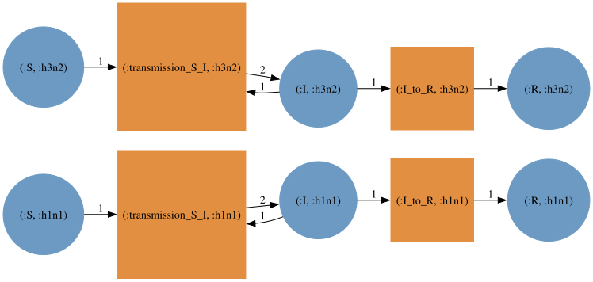
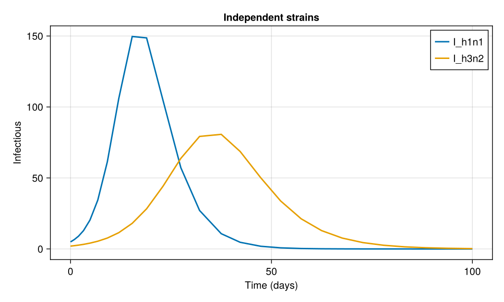
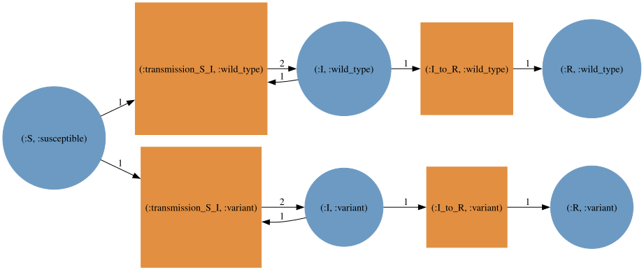
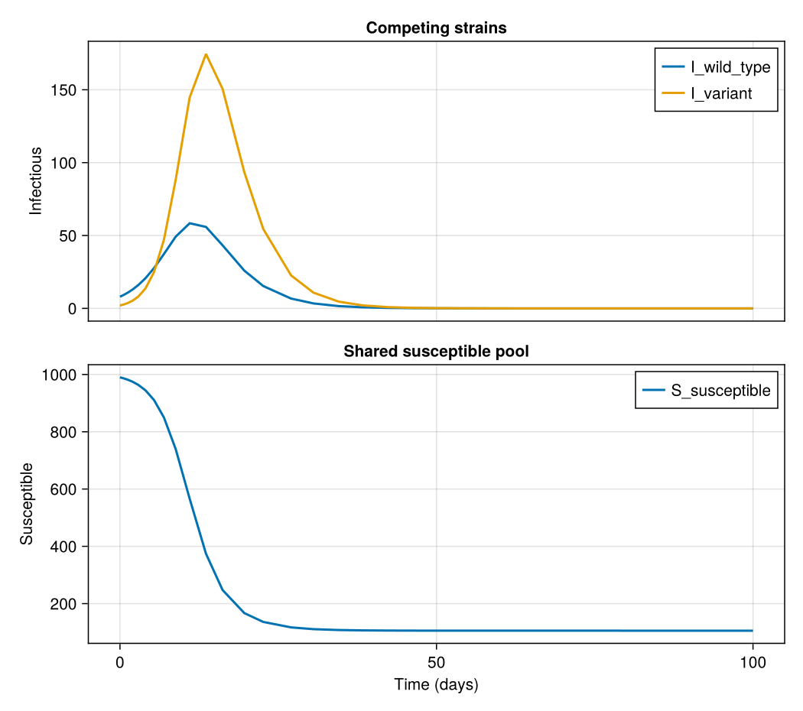
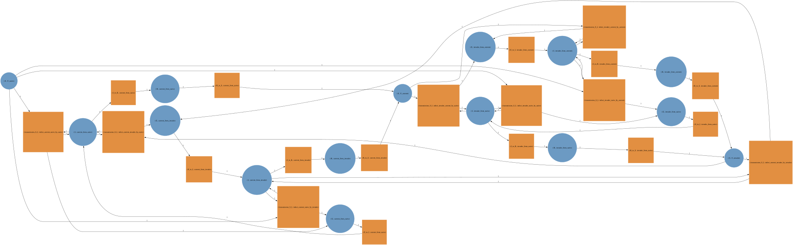
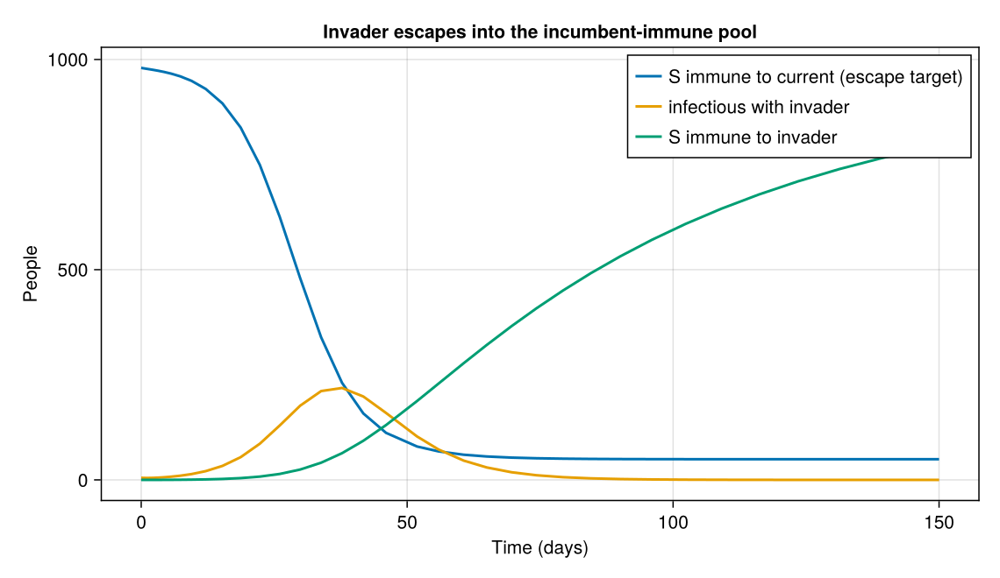

Multistrain models and immune history¶
Strain structure is another factor in a typed_product.
How strains interact is decided by the typing that the disease model and the strain model share:
| Strain model | Typing | Strains |
|---|---|---|
NoCrossImmunity |
OnePopulationTyping |
circulate independently (e.g. influenza subtypes) |
CompleteCrossImmunity |
UninfectedInfectedTyping |
compete for one susceptible pool (e.g. SARS-CoV-2 variants) |
ImmuneHistory |
UninfectedInfectedTyping |
partial escape, tracked by each person's infection history |
using AlgebraicEpiMech
using AlgebraicPetri
using AlgebraicPetri.TypedPetri: typed_product
using Catlab
using CairoMakie
using LabelledArrays
using OrdinaryDiffEqTsit5
using SymbolicIndexingInterface: SymbolCache
function solve_net(pn, u0, p, tspan)
f = ODEFunction(vectorfield_flat(pn); sys = SymbolCache(collect(keys(u0))))
return solve(ODEProblem(f, u0, tspan, p), Tsit5())
end
function plot_solution!(ax, sol, names)
for name in names
lines!(ax, sol.t, sol[name]; label = string(name), linewidth = 2)
end
axislegend(ax; position = :rt)
return ax
end
Independent strains¶
With one population type every compartment is replicated per strain and nothing couples the copies.
typing = OnePopulationTyping()
independent = dom(typed_product(create_model(typing, SIR()), create_model(typing, NoCrossImmunity([:h1n1, :h3n2]))))
(species = flatten_symbols.(snames(independent)), transitions = flatten_symbols.(tnames(independent)))
(species = [:S_h1n1, :S_h3n2, :I_h1n1, :I_h3n2, :R_h1n1, :R_h3n2], transitions = [:transmission_S_I_h1n1, :I_to_R_h1n1, :transmission_S_I_h3n2, :I_to_R_h3n2])

N = 1000.0
u0 = LVector(S_h1n1 = N - 5.0, I_h1n1 = 5.0, R_h1n1 = 0.0, S_h3n2 = N - 2.0, I_h3n2 = 2.0, R_h3n2 = 0.0)
p = LVector(transmission_S_I_h1n1 = 0.6 / N, I_to_R_h1n1 = 0.3, transmission_S_I_h3n2 = 0.4 / N, I_to_R_h3n2 = 0.25)
sol = solve_net(independent, u0, p, (0.0, 100.0))
fig = Figure(size = (700, 420))
ax = Axis(fig[1, 1]; xlabel = "Time (days)", ylabel = "Infectious", title = "Independent strains")
plot_solution!(ax, sol, [:I_h1n1, :I_h3n2])
fig

Competing strains¶
UninfectedInfectedTyping gives uninfected and infected compartments different types, so the strain model can leave S unstratified.
All strains then draw on one shared susceptible pool, and recovery from either strain protects against both.
ui_typing = UninfectedInfectedTyping(uninfected_type = :Susceptible, infected_type = :Infectious)
competing = dom(typed_product(create_model(ui_typing, SIR()), create_model(ui_typing, CompleteCrossImmunity([:wild_type, :variant]))))
(species = flatten_symbols.(snames(competing)), transitions = flatten_symbols.(tnames(competing)))
(species = [:S_susceptible, :I_wild_type, :I_variant, :R_wild_type, :R_variant], transitions = [:transmission_S_I_wild_type, :I_to_R_wild_type, :transmission_S_I_variant, :I_to_R_variant])

The variant is more transmissible but starts behind.
u0_c = LVector(S_susceptible = N - 10.0, I_wild_type = 8.0, I_variant = 2.0, R_wild_type = 0.0, R_variant = 0.0)
p_c = LVector(transmission_S_I_wild_type = 0.5 / N, I_to_R_wild_type = 0.25, transmission_S_I_variant = 0.8 / N, I_to_R_variant = 0.3)
sol_c = solve_net(competing, u0_c, p_c, (0.0, 100.0))
fig = Figure(size = (700, 620))
ax_infected = Axis(fig[1, 1]; ylabel = "Infectious", title = "Competing strains")
ax_susceptible = Axis(fig[2, 1]; xlabel = "Time (days)", ylabel = "Susceptible", title = "Shared susceptible pool")
plot_solution!(ax_infected, sol_c, [:I_wild_type, :I_variant])
plot_solution!(ax_susceptible, sol_c, [:S_susceptible])
linkxaxes!(ax_infected, ax_susceptible)
hidexdecorations!(ax_infected; grid = false)
fig

Immune history¶
ImmuneHistory is a stratification over UninfectedInfectedTyping that tracks which strains each susceptible is immune to.
After composition, susceptibles are indexed by an immune class h and the infected compartments by (h, i): prior history and infecting strain.
Two behaviours follow from the product rather than being coded:
- Escape: a class immune to the strain set
hhas transmission transitions only for strains outsideh. - History update on reversion: the only move between classes is reversion
R → S, which sends(h, i)toh ∪ {i}withFullHistory()(\(2^n\) classes) or to{i}withLatestInfection()(\(n + 1\) classes). Immunity is gained on rejoiningS, not on leaving it.
ui = UninfectedInfectedTyping()
seirs = create_model(ui, SEIRS())
latest = dom(typed_product(seirs, create_model(ui, ImmuneHistory([:current, :invader]; mode = LatestInfection()))))
(species = sort(flatten_symbols.(snames(latest))), transitions = sort(flatten_symbols.(tnames(latest))))
(species = [:E_current_from_invader, :E_current_from_naive, :E_invader_from_current, :E_invader_from_naive, :I_current_from_invader, :I_current_from_naive, :I_invader_from_current, :I_invader_from_naive, :R_current_from_invader, :R_current_from_naive, :R_invader_from_current, :R_invader_from_naive, :S_U_current, :S_U_invader, :S_U_naive], transitions = [:E_to_I_current_from_invader, :E_to_I_current_from_naive, :E_to_I_invader_from_current, :E_to_I_invader_from_naive, :I_to_R_current_from_invader, :I_to_R_current_from_naive, :I_to_R_invader_from_current, :I_to_R_invader_from_naive, :R_to_S_current_from_invader, :R_to_S_current_from_naive, :R_to_S_invader_from_current, :R_to_S_invader_from_naive, :transmission_S_I_infect_current_invader_by_invader, :transmission_S_I_infect_current_invader_by_naive, :transmission_S_I_infect_current_naive_by_invader, :transmission_S_I_infect_current_naive_by_naive, :transmission_S_I_infect_invader_current_by_current, :transmission_S_I_infect_invader_current_by_naive, :transmission_S_I_infect_invader_naive_by_current, :transmission_S_I_infect_invader_naive_by_naive])

Read the escape off the graph: S_U_current (immune to the incumbent) is infected by the invader into E_invader_from_current, and has no transition for infection by current.
Recovery leads to R_invader_from_current, and reversion folds the strain into the history, here overwriting it to S_U_invader.
With FullHistory() (the default) immunity accumulates instead, so the same recovered compartment reverts to S_U_current_invader, immune to both.
full = dom(typed_product(seirs, create_model(ui, ImmuneHistory([:current, :invader]))))
(species = ns(full), transitions = nt(full))
Escape in a mostly immune population¶
Seed a population that is almost entirely immune to the incumbent, with a small invader introduction and no incumbent circulating.
Under complete cross-immunity nothing could grow; here the invader escapes into S_U_current.
Rates are set by transition role.
species = flatten_symbols.(snames(latest))
transitions = flatten_symbols.(tnames(latest))
u0_h = LVector(; (s => 0.0 for s in species)...)
u0_h.S_U_current = N - 20.0
u0_h.S_U_naive = 15.0
u0_h.I_invader_from_naive = 5.0
β = Dict(:current => 0.30, :invader => 0.45)
function rate(t)
s = string(t)
occursin("infect_current", s) && return β[:current] / N
occursin("infect_invader", s) && return β[:invader] / N
startswith(s, "E_to_I") && return 1 / 3
startswith(s, "I_to_R") && return 1 / 7
startswith(s, "R_to_S") && return 1 / 60
error("unmapped transition $t")
end
p_h = LVector(; (t => rate(t) for t in transitions)...)
sol_h = solve_net(latest, u0_h, p_h, (0.0, 150.0))
invader = sol_h[:I_invader_from_naive] .+ sol_h[:I_invader_from_current]
fig = Figure(size = (760, 440))
ax = Axis(fig[1, 1]; xlabel = "Time (days)", ylabel = "People", title = "Invader escapes into the incumbent-immune pool")
lines!(ax, sol_h.t, sol_h[:S_U_current]; label = "S immune to current (escape target)", linewidth = 2)
lines!(ax, sol_h.t, invader; label = "infectious with invader", linewidth = 2)
lines!(ax, sol_h.t, sol_h[:S_U_invader]; label = "S immune to invader", linewidth = 2)
axislegend(ax; position = :rt)
fig

The invader wave drains S_U_current, and recovereds move on to S_U_invader: escape arises from the composition, with no seeded pulse.
Swapping SEIRS() for any other template, for example SEIRS(number_I_stages = 3), composes with the same immune-history factor, and observation can be attached to the composed net with attach_observation.